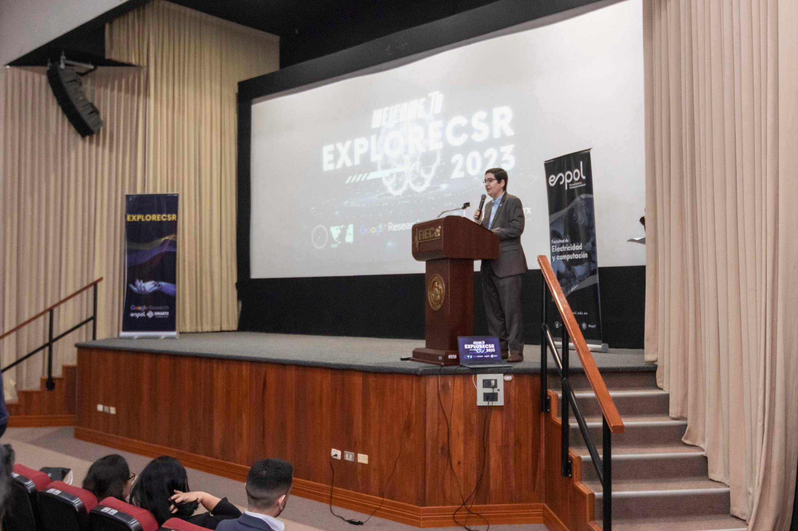

Skills
Development Technologies
- Java: JavaSE, JavaFX, Spring, SpringBoot
- Python: Anaconda, NumPy
- Frontend development: HTML, CSS, JavaScript, TypeScript
Database Admisitration
- SQL: MySQL
- NoSQL: MongoDB
Development Tools
- VCS: Git, Github
- Postman
Languages
- Spanish (Native)
- English (B1)
Proyects
Research Web (Pagina web demostrativa de LBA2)
Tecnologias Usadas:
- JavaScript
- React
- Css
Colaboradores
- Dario Laborde Jimenez
Visualizador de directorios con TreeMap
Tecnologias Usadas:
- Java con JavaFX
Colaboradores
- Dario Laborde Jimenez
- Jordan Salinas
- Jorge Gaibor
Catalogo de videojuegos
Tecnologias Usadas:
- Java con javaFX
Colaboradores
- Dario Laborde Jimenez
- Jordan Salinas
- Jorge Gaibor
Education
2021 - Actualidad
Guayaquil
Escuela Superior Politécnica del Litoral (ESPOL)
Ingeniería en ciencias de la computación
Participation In Events
Google Research ExploreCSR
21/04/2023 - 6/04/2023

Contact
Si estas interesado en que participe en algún proyecto tecnológico llena este formulario y te contactaré